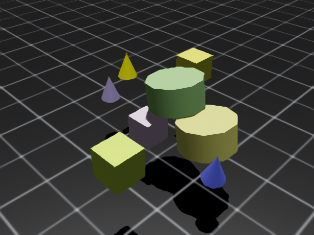
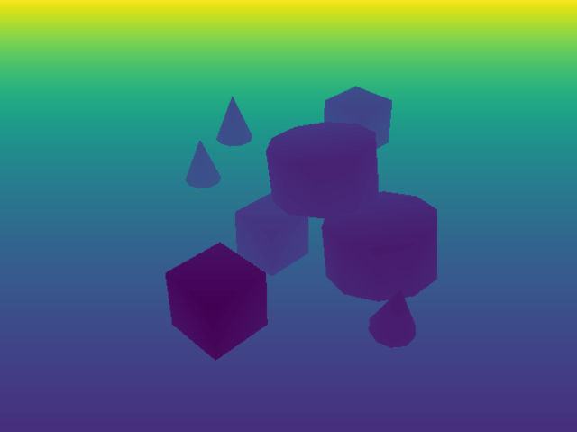
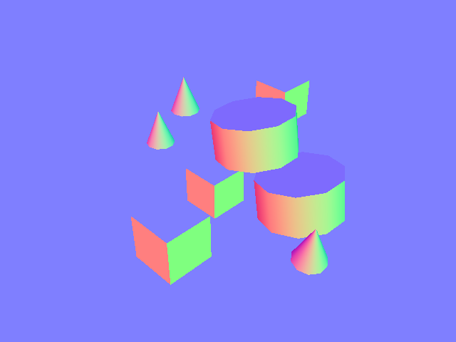
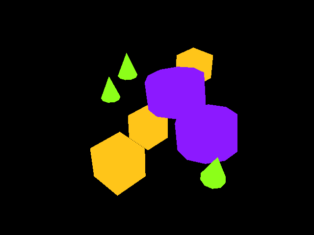
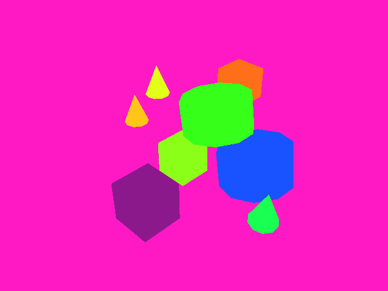
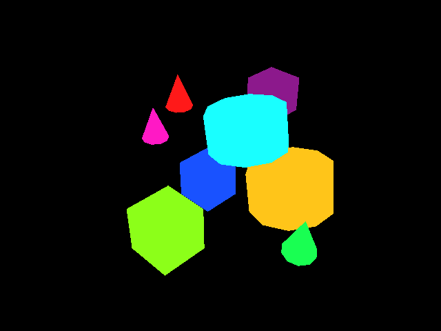

相机#
相机传感器通过使用 render_product 独特地定义，这是一个用于管理渲染管道（图像）生成的数据的结构。Isaac Lab 提供了完全控制这些渲染如何通过相机参数（如焦距、姿态、类型等）创建的能力，以及通过使用 Annotators，您可以控制希望渲染的数据类型，允许您记录不仅是 RGB 数据，还包括实例分割、物体姿态、物体 ID 等数据。
渲染的图像在 Isaac Lab 中是唯一的数据类型，因为这些数据的移动具有固有的较大带宽要求。单个 800 x 600 像素、32 位色彩（每个像素一个浮动点）的图像大小接近 2 MB。如果我们以每秒 60 帧的速度渲染并记录每一帧，那么该相机需要以 120 MB/s 的速度传输数据。将此值乘以环境中的相机数量和模拟中的环境数量，您可以快速看出，简单地向量化相机数据可能会导致带宽瓶颈。NVIDIA 的 Isaac Sim 利用我们在 GPU 硬件方面的专业知识，提供了一个专门解决渲染管线中这些扩展挑战的 API。
分块渲染#
备注
此功能仅适用于 Isaac Sim 版本 4.2.0 及更高版本。
分块渲染结合图像处理网络需要大量的内存资源，尤其是在更大分辨率下。我们建议在场景中使用 512 个相机，并配备 RTX 4090 GPU 或类似的硬件。
分块渲染 API 提供了一个向量化接口，用于从相机传感器收集数据。这对于强化学习环境非常有用，在这种环境中，可以利用并行化加速数据收集，从而加速训练循环。分块渲染通过使用一个单一的 render_product 来为场景中单个相机的 所有 克隆进行操作。单个图像的期望尺寸和环境的数量被用来计算一个更大的 render_product，该产品由相机各个克隆的独立渲染组成。 当所有相机都填充完其缓冲区后，渲染产品便 “完成” ，可以作为一个单一的、大尺寸的图像进行移动，从而大幅减少将数据从主机传输到设备时的开销，例如。只使用一个调用来同步设备数据，而不是每个相机一个调用，这正是分块渲染 API 在处理视觉数据时更高效的一个重要原因。
Isaac Lab 提供了用于 RGB、深度和其他注释器的分块渲染 API，您可以通过 TiledCamera 类来使用这些 API。分块渲染 API 的配置可以通过 TiledCameraCfg 类定义，指定的参数包括所有相机路径的正则表达式、相机的变换、所需的数据类型、要添加到场景中的相机类型以及相机分辨率。
tiled_camera: TiledCameraCfg = TiledCameraCfg(
prim_path="/World/envs/env_.*/Camera",
offset=TiledCameraCfg.OffsetCfg(pos=(-7.0, 0.0, 3.0), rot=(0.9945, 0.0, 0.1045, 0.0), convention="world"),
data_types=["rgb"],
spawn=sim_utils.PinholeCameraCfg(
focal_length=24.0, focus_distance=400.0, horizontal_aperture=20.955, clipping_range=(0.1, 20.0)
),
width=80,
height=80,
)
要访问分块渲染接口，可以创建一个 TiledCamera 对象，并用其从相机获取数据。
tiled_camera = TiledCamera(cfg.tiled_camera)
data_type = "rgb"
data = tiled_camera.data.output[data_type]
返回的数据将被转换为形状 (num_cameras, height, width, num_channels)，可以直接作为强化学习的观察值使用。
在进行渲染时，确保在启动环境时添加 --enable_cameras 参数。例如：
python source/standalone/workflows/rl_games/train.py --task=Isaac-Cartpole-RGB-Camera-Direct-v0 --headless --enable_cameras
标注器#
两个 TiledCamera 和 Camera 类提供用于从 replicator 检索各种类型标注数据的 API：
"rgb": 一种三通道渲染的颜色图像。"rgba": 一个具有 alpha 通道的 4 通道渲染颜色图像。"distance_to_camera": 包含到相机光学中心的距离的图像。"distance_to_image_plane": 一个包含从摄像机平面沿摄像机 z 轴到 3D 点的距离的图像。"depth": 与"distance_to_image_plane"相同。"normals": 一个包含每个像素的局部表面法线向量的图像。"motion_vectors": 一个包含每个像素处运动矢量数据的图像。"semantic_segmentation": 语义分割数据。"instance_segmentation_fast": 实例分割数据。"instance_id_segmentation_fast": 实例 ID 分割数据。
RGB 和 RGBA#

rgb 数据类型返回一个 3 通道 RGB 彩色图像，类型为 torch.uint8，维度为 (B, H, W, 3)。
rgba 数据类型返回一个 4 通道 RGBA 彩色图像，类型为 torch.uint8，维度为 (B, H, W, 4)。
将 torch.uint8 数据转换为 torch.float32，将缓冲区除以 255.0 以获得一个包含 0 到 1 之间数据的 torch.float32 缓冲区。
深度和距离#

distance_to_camera 返回一个单通道深度图像，表示到相机光学中心的距离。此注释器的维度为 (B, H, W, 1)，类型为 torch.float32 。
distance_to_image_plane 返回一个单通道深度图像，表示 3D 点相对于相机平面沿相机 Z 轴的距离。该注释器的维度为 (B, H, W, 1)，类型为 torch.float32 。
depth 被作为 distance_to_image_plane 的别名，并将返回与 distance_to_image_plane 注释器相同的数据，维度为 (B, H, W, 1)，类型为 torch.float32 。
法线#

normals 返回一张包含每个像素局部表面法向量的图像。该缓冲区的维度为 (B, H, W, 3)，包含每个向量的 (x, y, z) 信息，并且数据类型为 torch.float32 。
运动向量#
motion_vectors 返回图像空间中的每个像素的运动向量，使用 2D 数组表示每个像素在相机视口中在帧之间的相对运动。缓冲区的维度为 (B, H, W, 2)，其中 x 表示水平方向（图像宽度）的运动距离，向左移动时为正，向右移动时为负；y 表示垂直方向（图像高度）的运动距离，向上移动时为正，向下移动时为负。数据类型为 torch.float32 。
语义分割#

semantic_segmentation 输出相机视口中每个具有语义标签的实体的语义分割。除了图像缓冲区外，还可以通过 tiled_camera.data.info['semantic_segmentation'] 获取一个 info 字典，该字典包含 ID 到标签的信息。
如果
colorize_semantic_segmentation=True在相机配置中，返回的将是一个 4 通道的 RGBA 图像，维度为 (B, H, W, 4)，类型为torch.uint8。信息idToLabels字典将是从颜色到语义标签的映射。如果
colorize_semantic_segmentation=False，则会返回一个维度为 (B, H, W, 1) 且类型为torch.int32的缓冲区，包含每个像素的语义 ID。信息idToLabels字典将是从语义 ID 到语义标签的映射。
实例 ID 分割#

instance_id_segmentation_fast 输出相机视口中每个实体的实例 ID 分割。每个场景中的 prim 拥有不同路径的唯一实例 ID。除了图像缓冲区外，还可以通过 tiled_camera.data.info['instance_id_segmentation_fast'] 检索到一个 info 字典，其中包含 ID 到标签的映射信息。
instance_id_segmentation_fast 和 instance_segmentation_fast 之间的主要区别在于，实例分割注释器会向下遍历层级，直到具有语义标签的最低级 prim，而实例 ID 分割则始终遍历到叶节点 prim。
如果
colorize_instance_id_segmentation=True在相机配置中，将返回一个 4 通道的 RGBA 图像，维度为 (B, H, W, 4)，类型为torch.uint8。信息idToLabels字典将是颜色到该实体的 USD prim 路径的映射。如果
colorize_instance_id_segmentation=False，将返回一个形状为 (B, H, W, 1) 的类型为torch.int32的缓冲区，包含每个像素的实例 ID。信息idToLabels字典将是从实例 ID 到该实体的 USD prim 路径的映射。
实例分割#

instance_segmentation_fast 输出相机视口中每个实体的实例分割。除了图像缓冲区，还可以通过 tiled_camera.data.info['instance_segmentation_fast'] 获取 info 字典，其中包含 ID 到标签和 ID 到语义信息。
如果
colorize_instance_segmentation=True在相机配置中，则会返回一个 4 通道的 RGBA 图像，尺寸为 (B, H, W, 4)，类型为torch.uint8。如果
colorize_instance_segmentation=False，则将返回一个维度为 (B, H, W, 1) 且类型为torch.int32的缓冲区，其中包含每个像素的实例 ID。
信息 idToLabels 字典将是从颜色到该语义实体的 USD prim 路径的映射。信息 idToSemantics 字典将是从颜色到该语义实体的语义标签的映射。
当前的限制#
由于当前渲染器的限制，我们在场景中只能有 一个 TiledCamera 实例。对于需要多个相机的使用场景，我们可以通过在渲染调用之间移动相机的位置来模仿多相机的行为。
例如，在立体视觉设置中，可以实现以下代码片段：
# render image from "first" camera
camera_data_1 = self._tiled_camera.data.output["rgb"].clone() / 255.0
# update camera transform to the "second" camera location
self._tiled_camera.set_world_poses(
positions=pos,
orientations=rot,
convention="world"
)
# step the renderer
self.sim.render()
self._tiled_camera.update(0, force_recompute=True)
# render image from "second" camera
camera_data_2 = self._tiled_camera.data.output["rgb"].clone() / 255.0
请注意，这种方法仍然将所有相机的渲染分辨率限制为相同。目前，没有解决方案可以使用 TiledCamera 实现不同分辨率的图像。最好的方法是使用所有期望分辨率中的最大分辨率，并在渲染输出中添加额外的缩放或裁剪操作，作为后期处理步骤。
此外，在比较不同环境数量的渲染输出时，可能会出现明显的质量差异。目前，任何宽度小于 265 像素或高度小于 265 像素的合并分辨率，将自动切换到 DLAA 抗锯齿模式，该模式在抗锯齿过程中不会进行上采样。对于宽度和高度都大于 265 的分辨率，我们默认使用 “performance” DLSS 模式进行抗锯齿，以获得性能提升。抗锯齿模式和其他渲染参数可以在 RenderCfg 中指定。